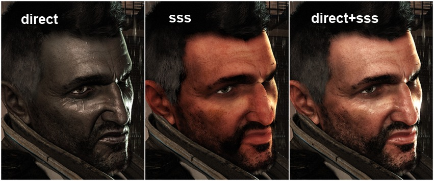
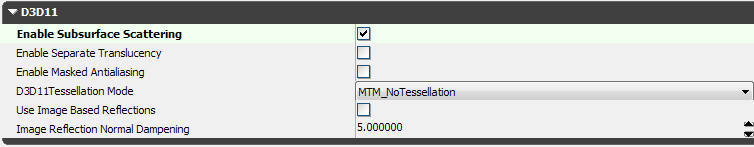
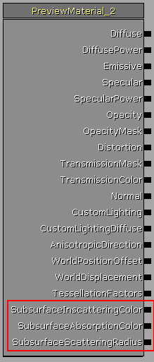
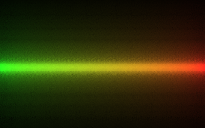
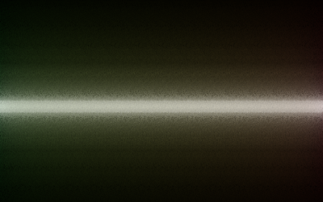
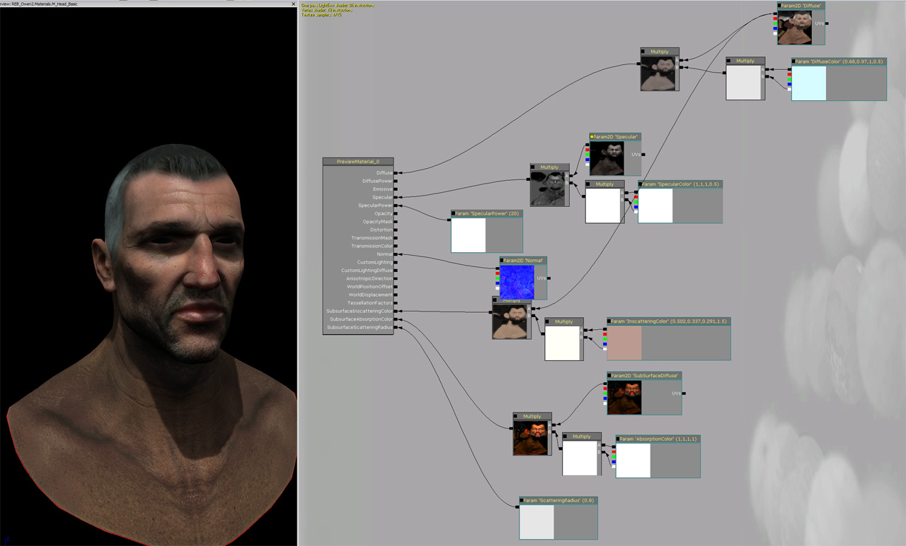

Screen Space Subsurface Scattering
Overview
This document explains how to use subsurface scattering in UE3. "Subsurface scattering" refers to light that penetrates the surface of an object, scatters through the interior of the object, and exits the object at a different location.
The subsurface scattering implemented by UE3 is a screen-space effect that blurs the light incident on the object's surface to other nearby points on the surface. The blur attenuates the lighting based on the world-space distance between the incident and exitant points to model absorption of light by the interior of the object.
This is an approximation that is sufficient to make us perceive a material as skin, but does not handle the phenomena of light scattering entirely through an object from a surface that isn't visible.

Enabling SSS
To use subsurface scattering, you must be running UE3 in DirectX11 mode.
In addition, you must enable subsurface scattering in your game's engine INI. Look for AllowSubsurfaceScattering in the [SystemSettings] group, and set it to True.
SSS Material Parameters
To add subsurface scattering to a material, you need to set its EnableSubsurfaceScattering property to True:

In addition, you need to provide values for the SubsurfaceInscatteringColor, SubsurfaceAbsorptionColor, and SubsurfaceScatteringRadius material parameters:

SubsurfaceInscatteringColor
The inscattering color is a color that modulates the light where it enters the object. This is useful for controlling the overall amount and color of subsurface scattering.
An example of inscattering color varying from green to red:

SubsurfaceAbsorptionColor
The absorption color is the color that remains after light has reached the scattering radius. The attenuation is an exponential decay from white at the entry point to the absorption color at the radius.
Unlike the inscattering color, the absorption color is evaluated only at the point where the light exits the object.
An example of absorption color varying from green to red:

SubsurfaceScatteringRadius
The scattering radius defines the maximum distance in world units that light can travel through the object before being completely absorbed.
Like the absorption color, it is evaluated at the point where light exits the object.
An example of scattering radius varying horizontally:
Content Example
The image below is a basic example of subsurface scattering used to create a character's skin material. You will notice that there is a diffuse texture which is used for phong diffuse and modulated by a color to create the inscattering color. A separate texture is used for the absorption color. The trick to creating a nice skin effect is to balance the lighting contribution of phong and subsurface. Too much subsurface effect will create a glowing or jelly look, while too much phong lighting will cause the character too look dry and hard.

Important!
You are viewing documentation for the Unreal Development Kit (UDK).
If you are looking for the Unreal Engine 4 documentation, please visit the Unreal Engine 4 Documentation site.